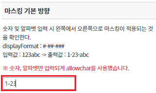
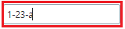
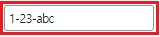
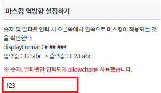
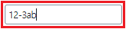
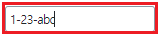
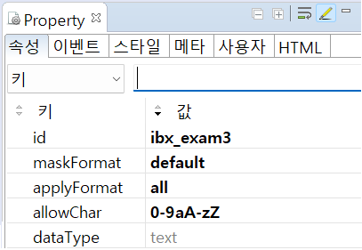
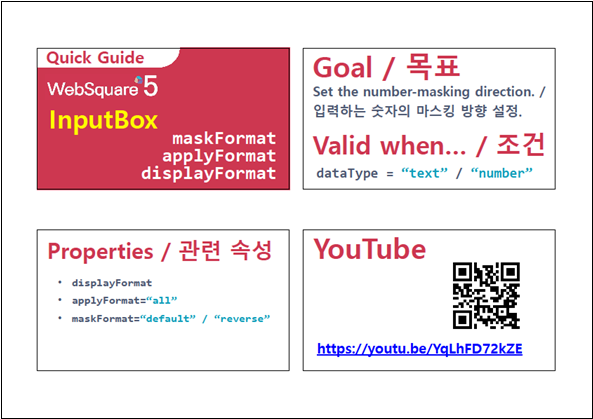
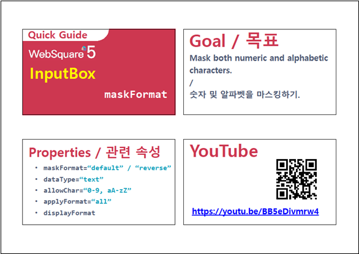

Input컴포넌트에 마스킹하는 방법 및 마스킹 방향 설정에 관한 예제입니다. 이 기능은 아래의 속성으로 사용할 수 있습니다. - dataType : Input의 dataType을 명시 - displayFormat : Input값에 format을 적용 - maskFormat : 마스킹이 적용되는 방향 설정
- displayFormat은 displayFormatter와 동시적용이 불가합니다.
마스킹 기본 방향
마스킹 역방향 설정하기
Input 컴포넌트에 '123abc'를 입력하면 입력 중 왼쪽에서 오른쪽으로 마스킹이 적용되는 것을 확인할 수 있습니다. (아래의 이미지와 같이 displayFormat에 설정되어 있는 "#-##-###" 형태로 왼쪽부터 값이 채워나가집니다.)
[브라우저(Chrome) 실행 예시]



Input 컴포넌트에 '123abc'를 입력하면 입력 중 오른쪽에서 왼쪽으로 마스킹이 적용되는 것을 확인할 수 있습니다. (아래의 이미지와 같이 displayFormat에 설정되어 있는 "#-##-###" 형태로 오른쪽부터 값이 채워나가집니다.)
[브라우저(Chrome) 실행 예시]



Input의 속성을 정의합니다.
[필수] dataType // [default: text, number, float, date, time, bigDecimal,euro] Input 컴포넌트 value의 dataType을 명시한다. 해당 값은 엔진에서 제공하는 displayFormat 등의 속성에서 참조한다.
[필수] displayFormat //엔진 내부에서 dataType 속성에 정의한 type에 따라 동작되며 excel의 서식을 적용하는 방식처럼 value의 format을 적용 할 수 있다.
[필수] maskFormat //[default: ""] jQuery Mask Plugin과 유사한 기능을 제공하며 # 대신 숫자를 대신 바꾼다.
default: displayFormat에 적용된 마스킹 값을 왼쪽부터 숫자로 바꾼다.
reverse: displayFormat에 적용된 마스킹 값을 오른쪽부터 숫자로 바꾼다.
applyFormat은 항상 all로 적용된다.
applyFormat과는 다르게 DataCollection에는 maskFormat이 적용된 값이 들어가며, getValue API 호출 시에도 maskFormat이 적용된 값이 반환된다.
displayFormat 속성 예시) ###-###-####, ##-###
dataType 속성은 text와 number를 지원하며, number일 경우 0으로도 마스킹이 가능하다. (#은 입력할 때 표시되지 않지만, 0은 입력할 때 표시됨)
필수 속성: displayFormat, dataType
그림 1.웹스퀘어5 SP5 스튜디오의 Property View(속성창) 예시

[소스 코드 예시]
<!-- input 의 소스 본문 예시 --> <xf:input displayFormat="#-##-###" maskFormat="default" allowChar="0-9aA-zZ" id="ibx_exam3"> <!-- 중략 --> </xf:input>
dataType
displayFormat
maskFormat
[웹스퀘어5 SP5 개발 가이드] Input
링크 : https://docs1.inswave.com/sp5_user_guide/8df43d1f59fab704#3f78e914466d2d7a
[웹스퀘어5 SP5 개발 가이드] Input 마스킹 방향
링크 : https://docs1.inswave.com/sp5_user_guide/8df43d1f59fab704#8583fb19dff14eb0
[웹스퀘어5 SP5 개발 가이드] Input 숫자 및 알파벳 마스킹
링크 : https://docs1.inswave.com/sp5_user_guide/8df43d1f59fab704#60b151bf78e8e26a
Input 마스킹 방향
링크 : https://youtu.be/YqLhFD72kZE

Input 숫자 및 알파벳 마스킹
링크 : https://youtu.be/BB5eDivmrw4
